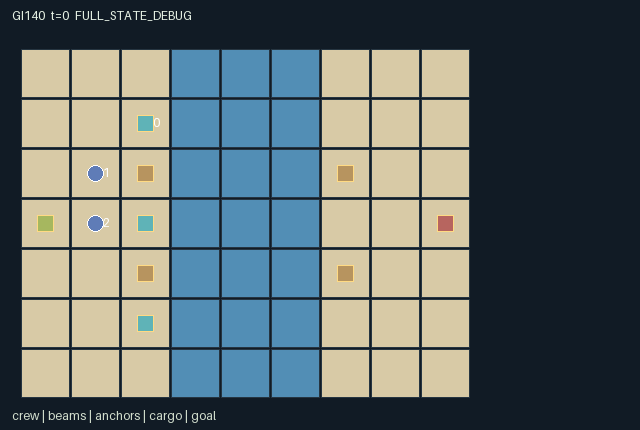

GI140 / SPATIAL
两岸栈桥
木梁、夹具与两岸锚定决定桥面支撑；重货需要两岸相连，结构变化可使通路坍塌。
Original saved demonstration
Recorded native state, often authored scripts or interventions; information scope and failures are preserved in the original provenance. This is a saved demonstration, not live browser play.

Release verification episode
Untrained uniform legal actions. Actual JAX state sampled along the full original episode; full-state debug camera. No human performance or learning claim.

Run this game
crucibles play --game 140
Start Python locally, then open the address printed by the terminal. Installation, multiplayer, takeover and keyboard controls →
Objective, rewards & ending
Exact task contract
{
"objective": "Use three beams and two reusable clamps to carry the single heavy crate from the west bank to within one cell of (8,3). Successful delivery rewards every role +1.",
"natural_termination": "Delivery or any unsupported worker/cargo loss terminates. A simultaneous failure takes reward priority (-1 each). Otherwise 128 steps truncate.",
"interaction": "Only the carpenter can reposition beams and only the rigger can engage clamps. A path to one clamped bank carries workers; paths to both banks carry cargo. A support edit therefore changes another role's movement opportunities and can cause immediate load failure.",
"observation_access": "All positions, tool roles, inventories implied by ownership, structural support, clamps, cargo and event flags are public. Every entity is visible to every role; the live map is a public rendering of the exact support rule."
}Declared per-step reward bounds: -1 to 1. Observability: fully_observable.
Rules
- Carpenter carries one of three beams; rigger allocates two clamps among four bank anchors; hauler carries the heavy crate.
- Beam slots are x=3..5 at y=2 or y=4. A beam graph reaching one clamped bank supports workers; reaching both banks supports heavy cargo.
- Movement uses old support. Carpenter/rigger edits then change support, collapse unattached installed beams, and check current workers and cargo.
- Recovering a beam or releasing a clamp can strand another worker or destroy a heavy crossing. Lost beams never return.
- All movement into currently occupied cells is blocked; competing empty-target moves are all rejected.
- Delivery gives +1 each; any support/load failure ends the episode with -1 each. No execution or solvability result is claimed.
Original mechanism document (historical status wording retained)
# Two-bank Trestle (game-v3-00140)
**Status: AUTHORED_NOT_EXECUTED.** This is an original initial-window train-only source package. Source, scene and literal action scripts are authored hypotheses. No candidate was imported, evaluated, replayed, trained or rendered during authoring. No final-test or earlier candidate/result input was used.
Source SHA-256: `31f01f76be6f5741e75f16e0f04cc65c6fae797175ed3894cc56cd5dd5f41f47`.
Native boundary: A=3, O=128, U=11, H=128; homogeneous scalar int32 actions, float32 flat observations and rewards, fixed-key int32/bool state. Declared observation interval [0, 1], reward interval [-1, 1]. These are representation/game bounds, not empirical acceptance thresholds.
## Physical construction rule and complementary roles
The 9x7 world has solid banks at x=0..2 and x=6..8, separated by river columns x=3..5. There are six possible beam cells: those three river columns at y=2 or y=4. Three conserved beams begin at (2,1),(2,3),(2,5). Four bank anchors lie at (2,2),(6,2),(2,4),(6,4); none initially has a clamp. There are exactly two reusable clamps. The single heavy crate begins at (0,3), and the delivery depot is (8,3). Reset and raw-step keys are accepted but unused.
Crew 0 is the carpenter, which can lift one nearby stock beam, place its carried beam in a compass-adjacent slot, or recover an adjacent installed beam when empty-handed. Crew 1 is the rigger, which engages or releases a compass-adjacent bank anchor. Crew 2 is the hauler, which can lift nearby cargo, drop it at a compass-adjacent legal heavy-load cell, or deliver within one cell of the goal. The homogeneous action alphabet has these explicit role-specific tool meanings. Inapplicable tools are no-ops.
Installed beams form an orthogonal adjacency graph. A beam reaches the west or east bank if it is adjacent to an engaged anchor there or connected through installed beams to one. Three fixed propagation rounds cover all paths in the three-node graph. Support level 1 means at least one bank is reached and supports an unladen worker. Support level 2 means both banks are reached and supports heavy cargo, including the carrying hauler. Being geometrically adjacent to an unclamped bank confers no support.
This discrete connectivity/load rule is the whole physics model. It does not approximate continuous bending, torque or force. Stock beams on land and carried beams are not graph edges; beam placement changes actual traversability and cargo support. An unsupported newly installed beam collapses immediately and is permanently lost. The rigger can cross a one-bank cantilever to engage the far anchor before the hauler takes its load onto the bridge.
## Exact update order and conflicts
All live actions are legal intents. Failed/border moves and unavailable tool uses no-op; invalid ids become wait. Movement first uses the old support graph and each worker's old load. It rejects entry into any other worker's current cell, including a cell that is vacated simultaneously. Shared empty-target proposals are all rejected. Thus following and swaps are not allowed.
The carpenter edits beams, then the rigger edits clamps. Their edits are seen together by the support computation. The rigger cannot engage a third clamp; releasing an engaged clamp returns it. Unsupported installed beams then become lost. Recovering a root beam can disconnect a different beam beneath another worker, and releasing an anchor can reduce a complete span from heavy to light support without physically removing the deck.
The hauler next lifts or drops cargo. A drop must have current heavy support (or a solid bank) and cannot target a worker's occupied cell. All worker positions and the crate are then checked against the updated graph and actual load. An unladen worker needs light support; a carrier and the heavy crate need both-bank support. A support edit can therefore invalidate a move that was legal against the pre-edit graph. Falling workers keep their endpoint and receive a fallen flag in the terminal state; cargo loss is explicit. The episode terminates immediately on any such failure.
A safe delivery gives +1 to every crew member. Any worker/cargo support failure gives -1 each and has reward priority if it coincides with another delivery. Incomplete construction may reach H=128 and truncate with no terminal bonus. All entities and actual support-map tiles are public. Inactive/lost beams are not drawn as functioning structures; a carrier's beam/crate has its real endpoint.
## Partner-dependent construction strategies
The carpenter can build the upper or lower cantilever; the rigger can accompany it, wait at the start, or plan a far-bank clamp engagement. Their schedules change when the hauler can move. With only three beams, two complete crossings cannot coexist. Recovering and relocating a beam can change the crossing lane, but removing a structural root while another worker depends on it is dangerous.
A rigger may conserve the second clamp until the first-bank bridge reaches the far shore, or move/reallocate clamps for a different construction route. A hauler can wait on the bank, carry early as far as the bank edge, or drop its load to cross a light bridge unladen. These choices have different dependency and occupancy costs. The paired action hypothesis holds the hauler's movement fixed and changes only a far-bank clamp release, exposing a direct causal change to that other role's load support.
The authored upper-span schedule is one proposed route, not a completeness or optimality result. There is no score, percentage, seed count or training-quality requirement used to declare the game valid.
## Declared invariants and boundedness
- Exactly three beam ids persist, each with status stock/carried/installed/lost. At most one beam is carried, only by the carpenter. Lost beams never reappear.
- clamp_stock + sum(clamp_on) = 2, with stock in 0..2. Anchor positions are fixed, and a free anchor remains a visible physical location.
- Installed positions are distinct and belong to the six allowed river slots. A nonlost carried beam follows crew 0, while an installed beam's position is a graph node.
- Support is 0, 1 or 2 and is derived solely from installed geometry and engaged anchors. The dynamic map's river values mirror that support, not a decorative progress meter.
- Crew positions remain distinct and in bounds. Unsupported endpoints can occur only in the actual failure terminal state.
- The crate has at most one carrier, only crew 2. It is active exactly while neither delivered nor lost; a held crate shares the hauler's cell.
- These are declared properties for sealed runtime checking. No source execution or numerical support test was run.
Prospective variants could change anchor placement, beam stock, tool allocation or load requirements. Those would alter dependencies and sequencing rather than merely recolor a common counter game. None of these variants is implemented or claimed to generalize here.
## Exact action legend
- 0: Wait.
- 1: Move north.
- 2: Move east.
- 3: Move south.
- 4: Move west.
- 5: Lift nearby stock beam (carpenter) or cargo (hauler); rigger no-op.
- 6: Tool north: place/recover beam, toggle clamp, or drop cargo.
- 7: Tool east: place/recover beam, toggle clamp, or drop cargo.
- 8: Tool south: place/recover beam, toggle clamp, or drop cargo.
- 9: Tool west: place/recover beam, toggle clamp, or drop cargo.
- 10: Deliver heavy cargo within one cell of the east depot; other roles no-op.
## Native observation columns
- [0:1), public: Clock t/128.
- [1:2), self: Observer id/4.
- [2:14), public: Three crew records, stride 4: x/16,y/16,tool_role/4,fallen.
- [14:29), public: Three beam records, stride 5: x/16,y/16,status/4,(owner+1)/2,support/2.
- [29:41), public: Four anchor records, stride 3: x/16,y/16,clamp_on; available clamp stock equals 2 minus sum(clamp_on).
- [41:46), public: Cargo: x/16,y/16,(owner+1)/4,delivered,lost.
- [46:48), public: Goal x/16,y/16.
- [48:60), public: Per-transition flags tool[3],collapse[3],fall[3],blocked[3].
- [60:123), public: Actual 7x9 terrain/support map in y-major order, tile value/4.
- [123:128), padding: Five constant zeros.
The renderer binds only these real state groups, positions, active masks and role visibility masks. Glyphs and inert colors carry no extra rule. A carried object shares the actual carrier endpoint; flight, growth, support changes, leases and service are real state transitions. Frame interpolation is presentation only and must not invent a catch, handoff, crossing or private observation. Debug/full-state view must remain separately labeled.
## Authored paired interventions
The complete literal integer vectors, including every prefix step, are saved in playthrough.json. These are not observed trajectories or guaranteed successful solutions.
**far_bank_release_changes_hauler_survival**
The hauler makes the same eastward move from (4,2). In B alone, rigger at (6,3) releases the north anchor at (6,2). The deck should retain light support but lose heavy rating, causing cargo and hauler failure. Untested source-level hypothesis.
Prefix (28 joint steps): `[[5,7,5],[3,0,0],[7,0,0],[3,0,0],[5,0,0],[1,0,0],[2,0,0],[7,0,0],[4,0,0],[3,0,0],[3,0,0],[3,0,0],[5,0,0],[1,0,0],[1,0,0],[1,0,0],[2,0,0],[2,0,0],[7,0,0],[2,2,0],[2,2,0],[1,2,0],[0,2,0],[0,7,0],[0,2,2],[0,3,1],[0,0,2],[0,0,2]]`.
Branch A suffix: `[[0,0,2]]`.
Branch B suffix: `[[0,6,2]]`.
## Raw terminal and boundary semantics
A live raw step advances t once. Natural termination takes priority over the horizon: truncated=(next_t>=H) and not terminated; episode_done=terminated or truncated. raw_step uses an absorbing branch for an already completed state: every leaf and observation remain unchanged, reward is zero, all per-agent dones stay true, and terminal causes are preserved. No reset occurs in raw_step. A later trusted wrapper may reset outside it; an absorbing call is not a new learning transition or a new occurrence of the preserved last-transition event flags.
Invalid/out-of-range commands deterministically become action 0. Every role always has action 0. All small signed codes, clocks, indices and inventories use int32; masks and terminal causes use bool. The externally supplied uint32 reset key is not duplicated in the state. Scaling uses powers of two. This design choice is not a numeric-parity result.
The required community adapter remains a separate implementation-layer deliverable: map native array row i to agent_i in action/observation/reward/done dictionaries and map info.done_all to __all__, preserving these masks, role observations, raw terminal causes and inactive-role semantics. This six-file author package neither implements that adapter nor silently replaces a frozen learner.
## Literal source evidence
- `support`: candidate.py lines 12-22.
- `terrain`: candidate.py lines 24-30.
- `refresh`: candidate.py lines 32-48.
- `reset`: candidate.py lines 50-86.
- `legal_actions`: candidate.py lines 88-90.
- `advance`: candidate.py lines 92-176.
- `observe`: candidate.py lines 178-190.
- `raw_step`: candidate.py lines 192-197.
West-bank connectivity seeds — candidate.py line 15:
```python
west = installed & jnp.any(near_anchor & state["clamp_on"][None, :] & (state["anchor_pos"][:, 0] == 2)[None, :], axis=1)
```
Bounded graph propagation — candidate.py line 20:
```python
west = west | jnp.any(adjacency & west[None, :], axis=1)
```
Cargo changes the required support level — candidate.py line 28:
```python
need = 1 + heavy.astype(jnp.int32)
```
Movement checks current support and load — candidate.py line 100:
```python
ground_ok = self.terrain(q, heavy, state)
```
Carpenter places an actual graph edge — candidate.py line 122:
```python
place = tool_direction[0] & jnp.any(held) & slot & ~jnp.any(at_target)
```
Another role can withdraw an existing edge — candidate.py line 124:
```python
recover = tool_direction[0] & ~jnp.any(held) & jnp.any(at_target)
```
Finite clamp resource controls rigger edits — candidate.py line 134:
```python
can_toggle = n["clamp_on"][anchor_id] | (state["clamp_stock"] > 0)
```
Disconnected installed beams collapse — candidate.py line 138:
```python
collapse = (n["beam_status"] == 2) & (n["beam_support"] == 0)
```
Post-edit support can invalidate another worker position — candidate.py line 154:
```python
fall = ~self.terrain(n["agent_pos"], now_heavy, n)
```
Heavy crate support is separately checked — candidate.py line 155:
```python
cargo_safe = self.terrain(cargo[None, :], jnp.ones((1,), dtype=jnp.bool_), n)[0]
```
Actual task outcome and failure priority — candidate.py line 175:
```python
amount = jnp.where(failed, -1.0, jnp.where(deliver, 1.0, 0.0))
```
## Reference use and provenance
All game rules and kernel expressions were authored for this assigned design; no upstream game, board implementation, model weights or learner code was copied. The allowed reference snapshots were read as inspiration and interface context. Their exact identities are also recorded in generation_record.json.
- JaxMARL supplies the community parallel, agent-keyed API model and the idea of distinct environment/algorithm components. Its example game rules were not copied.
- Pgx supplies explicit-key, legal-mask and state/visualization API context for discrete games. It is a board-game environment library, not this spatial game's implementation.
- Craftax supplies inspiration for stateful spatial inventory and persistent world consequences. The assigned rules are independent of Craftax's game mechanics.
- PureJaxRL is an end-to-end algorithm implementation reference. Craftax_Baselines/ppo_rnn.py is recurrent PPO integration code and credits Chris Lu/PureJaxRL. Neither is treated as a new game library or substituted for the experiment's learner.
- `references\JaxMARL_README.md`; SHA-256 `6649d04f5ed05d620e78e8416a00d4db841cf2633ae60fdb3c9729e037a71c15`; source: https://github.com/bold-lab-ai/JaxMARL/blob/main/README.md.
- `references\Pgx_README.md`; SHA-256 `153f44999e55d5df3e51e13dee6ef418cc9704ddfa26206f1dc5789b9cbbf8df`; source: https://github.com/sotetsuk/pgx/blob/main/README.md.
- `references\PureJaxRL_README.md`; SHA-256 `d5f40182c924a42cec820931e61a7d5070e48c4c8413c7d16455abc6ea0ef6b0`; source: https://github.com/luchris429/purejaxrl/blob/main/README.md.
- `references\Craftax_Baselines_ppo_rnn.py`; SHA-256 `5f93e6a7c3a1e0c551831d75be311735ba495dfdecae51787a1c03a27b1cd011`; source: https://github.com/MichaelTMatthews/Craftax_Baselines/blob/main/ppo_rnn.py.
- `references\Craftax_README.md`; SHA-256 `7f9757a2047143cf183f7e2e84851a740f386af80dbee050c89b316d66a3d3ff`; source: https://github.com/MichaelTMatthews/Craftax/blob/main/README.md.
Only this batch's sanitized requests/designs/contracts and the five supplied snapshots were inputs. Shared input bytes were not modified. Local AST/data checks do not establish successful JAX execution, eager/JIT/vmap parity, legal-script replay, balance, learnability, strategic richness, non-isomorphism, adaptation or meta-RL transfer. Actual replay, animation, community adapter behavior and scientific evidence require the separately authorized execution and review stages.
Commands
Roles & abilities
agent_0 carpenter: carry/place/recover beams
agent_1 rigger: move two reusable anchor clamps
agent_2 hauler: lift/drop/deliver heavy cargo
Observation permissions
Training receives only the original observation rows. Role cameras use declared visibility; debug cameras are explicitly marked. Local benchmark records log debug exposure and role takeover history.
Exact observation layout
[
{
"slice": [
0,
1
],
"meaning": "Clock t/128",
"visibility": "public"
},
{
"slice": [
1,
2
],
"meaning": "Observer id/4",
"visibility": "self"
},
{
"slice": [
2,
14
],
"meaning": "Three crew records, stride 4: x/16,y/16,tool_role/4,fallen",
"visibility": "public"
},
{
"slice": [
14,
29
],
"meaning": "Three beam records, stride 5: x/16,y/16,status/4,(owner+1)/2,support/2",
"visibility": "public"
},
{
"slice": [
29,
41
],
"meaning": "Four anchor records, stride 3: x/16,y/16,clamp_on; available clamp stock equals 2 minus sum(clamp_on)",
"visibility": "public"
},
{
"slice": [
41,
46
],
"meaning": "Cargo: x/16,y/16,(owner+1)/4,delivered,lost",
"visibility": "public"
},
{
"slice": [
46,
48
],
"meaning": "Goal x/16,y/16",
"visibility": "public"
},
{
"slice": [
48,
60
],
"meaning": "Per-transition flags tool[3],collapse[3],fall[3],blocked[3]",
"visibility": "public"
},
{
"slice": [
60,
123
],
"meaning": "Actual 7x9 terrain/support map in y-major order, tile value/4",
"visibility": "public"
},
{
"slice": [
123,
128
],
"meaning": "Five constant zeros",
"visibility": "padding"
}
]Entity visibility & attributes
[
{
"id": "crew",
"kind": "agent",
"count": 3,
"position": [
"agent_pos"
],
"active": [
"agent_active"
],
"visibility": [
"agent_visibility"
],
"attributes": [
{
"state_path": [
"tool_role"
],
"meaning": "0 carpenter, 1 rigger, 2 hauler",
"display": "category"
},
{
"state_path": [
"fallen"
],
"meaning": "Crew member failed the current support/load check",
"display": "flag"
}
]
},
{
"id": "beams",
"kind": "object",
"count": 3,
"position": [
"beam_pos"
],
"active": [
"beam_active"
],
"visibility": [
"beam_visibility"
],
"attributes": [
{
"state_path": [
"beam_status"
],
"meaning": "0 stock, 1 carried, 2 installed, 3 lost",
"display": "category"
},
{
"state_path": [
"beam_owner"
],
"meaning": "0 carpenter when carried; otherwise -1",
"display": "category"
},
{
"state_path": [
"beam_support"
],
"meaning": "0 unsupported/not installed, 1 one-bank connected, 2 both-bank connected",
"display": "bar"
}
]
},
{
"id": "anchors",
"kind": "landmark",
"count": 4,
"position": [
"anchor_pos"
],
"active": [
"anchor_active"
],
"visibility": [
"anchor_visibility"
],
"attributes": [
{
"state_path": [
"clamp_on"
],
"meaning": "A reusable clamp is engaged here",
"display": "flag"
}
]
},
{
"id": "cargo",
"kind": "object",
"count": 1,
"position": [
"cargo_pos"
],
"active": [
"cargo_active"
],
"visibility": [
"cargo_visibility"
],
"attributes": [
{
"state_path": [
"cargo_owner"
],
"meaning": "2 when carried by hauler; otherwise -1",
"display": "category"
},
{
"state_path": [
"delivered"
],
"meaning": "Cargo reached the goal",
"display": "flag"
},
{
"state_path": [
"cargo_lost"
],
"meaning": "Cargo lacked heavy-load support",
"display": "flag"
}
]
},
{
"id": "goal",
"kind": "landmark",
"count": 1,
"position": [
"goal_pos"
],
"active": [
"goal_active"
],
"visibility": [
"goal_visibility"
],
"attributes": [
{
"state_path": [
"delivered"
],
"meaning": "Delivery completion state",
"display": "flag"
}
]
}
]Actual verification & provenance
Per-game execution receipt
{
"game": "gi140",
"status": "PASS",
"verification_revision": 2,
"source_sha256": "31f01f76be6f5741e75f16e0f04cc65c6fae797175ed3894cc56cd5dd5f41f47",
"seed": 20261101,
"runtime": {
"jax": "0.4.38",
"numpy": "1.26.4",
"devices": [
"TFRT_CPU_0"
]
},
"dimensions": {
"num_agents": 3,
"observation_size": 128,
"num_actions": 11,
"max_steps": 128
},
"checks": {
"eager_reset": {
"status": "PASS",
"seconds": 2.2001655101776123
},
"observation_spaces_legal_masks": {
"status": "PASS",
"seconds": 0.22440671920776367
},
"eager_step": {
"status": "PASS",
"seconds": 1.0173094272613525
},
"jit_reset": {
"status": "PASS",
"seconds": 0.1556684970855713
},
"jit_step": {
"status": "PASS",
"seconds": 0.8579812049865723
},
"eager_jit_integer_parity_float_measurement": {
"status": "PASS",
"seconds": 0.002000570297241211
},
"jit_vmap_reset": {
"status": "PASS",
"seconds": 0.32430219650268555
},
"jit_vmap_step": {
"status": "PASS",
"seconds": 2.028372049331665
},
"outer_autoreset_api": {
"status": "PASS",
"seconds": 1.1749646663665771
},
"full_original_horizon_episode_and_render": {
"status": "PASS",
"seconds": 0.8676578998565674
}
},
"human_scores": null,
"browser_controls": "PENDING",
"failures": [],
"elapsed_seconds": 9.585551261901855,
"float_parity_max_abs": 0.0,
"numerical_parity": "EXACT",
"raw_terminal_absorbing": "PASS",
"terminal_outer_reset": "PASS",
"episode_steps": 128,
"scripted_random_returns": [
0.0,
0.0,
0.0
],
"terminal": true,
"demo_information": "FULL_STATE_DEBUG",
"demo_frames": 27,
"render_roles_checked": 3
}Chromium control verification
{
"game": "gi140",
"status": "PASS",
"human_scores": null,
"engineering": true,
"checks": [
"catalog_selected_and_real_native_reset",
"dom_queue_and_native_step",
"second_participant_ownership_and_native_joint_step",
"all_roles_individually_controllable_no_role_cap",
"explicit_debug_camera",
"release_to_pure_ai_without_reset"
],
"seconds": 4.294325351715088
}Original identity and file hashes
{
"id": 140,
"key": "gi140",
"title": "两岸栈桥",
"summary": "木梁、夹具与两岸锚定决定桥面支撑；重货需要两岸相连，结构变化可使通路坍塌。",
"tags": [
"桥梁协作",
"承重依赖"
],
"family": "spatial",
"dimensions": {
"num_agents": 3,
"observation_size": 128,
"num_actions": 11,
"max_steps": 128
},
"source_sha256": "31f01f76be6f5741e75f16e0f04cc65c6fae797175ed3894cc56cd5dd5f41f47",
"manifest_sha256": "842a99deed767a44035b6f82a50d63a33f59b924d54976edacce3290bca1d1ec",
"files": [
{
"file": "candidate.py",
"sha256": "31f01f76be6f5741e75f16e0f04cc65c6fae797175ed3894cc56cd5dd5f41f47",
"bytes": 12500,
"origin": "work/exp_2/game_incubator_v3/community_games222_225_visualization_root222_v1/native154_candidate/registry/v2/games/game-v3-00140/candidate.py"
},
{
"file": "manifest.json",
"sha256": "842a99deed767a44035b6f82a50d63a33f59b924d54976edacce3290bca1d1ec",
"bytes": 14228,
"origin": "work/exp_2/game_incubator_v3/community_games222_225_visualization_root222_v1/native154_candidate/registry/v2/games/game-v3-00140/manifest.json"
},
{
"file": "scene.json",
"sha256": "bee66b02a0db756d35b0ecf9f57299fd5150c3f4ab94c98803e79e21a9e6d0ad",
"bytes": 7807,
"origin": "work/exp_2/game_incubator_v3/community_games222_225_visualization_root222_v1/native154_candidate/registry/v2/games/game-v3-00140/scene.json"
},
{
"file": "mechanism.md",
"sha256": "ec2540445ad9ecd2a1e5285e88597a31aa6eed7348397ce6f24cfe05bdfd18bd",
"bytes": 15352,
"origin": "work/exp_2/game_incubator_v3/sources/game-v3-00140/attempt_00/mechanism.md"
},
{
"file": "playthrough.json",
"sha256": "6699c4f9b8d49b9e7a3853411f6a7ae0202e901454d85bb4f78560c5a0098423",
"bytes": 5319,
"origin": "work/exp_2/game_incubator_v3/sources/game-v3-00140/attempt_00/playthrough.json"
}
],
"original_status": "NATIVE154_REFERENCE",
"original_saved_replay": true,
"release_validation": "PASS",
"human_scores": null,
"browser_validation": "PASS"
}